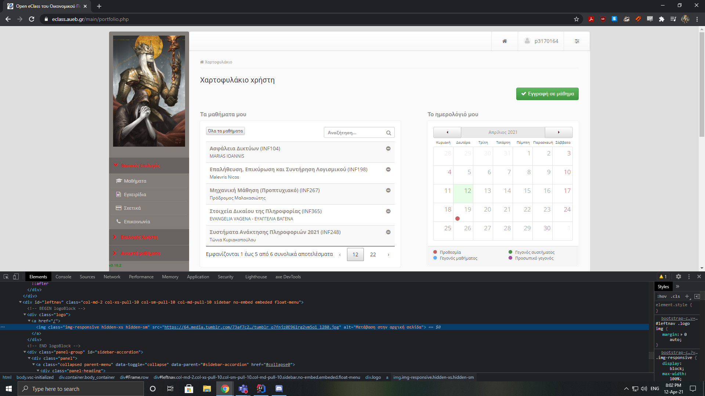
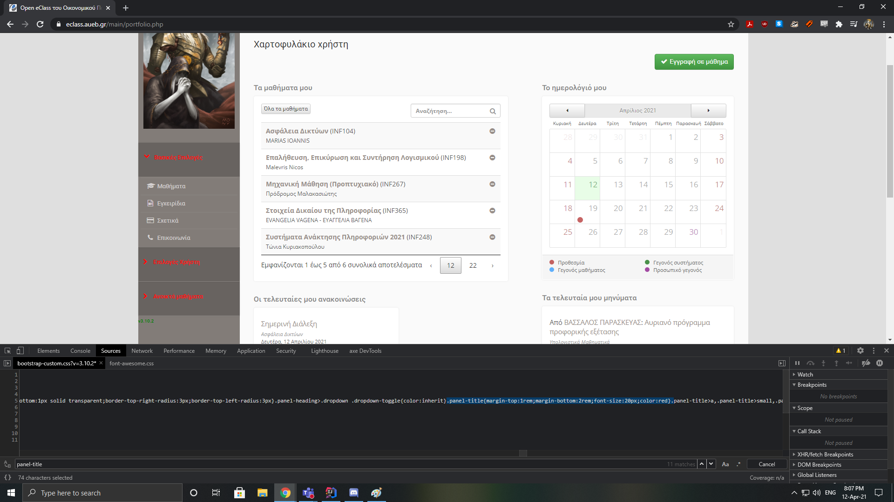
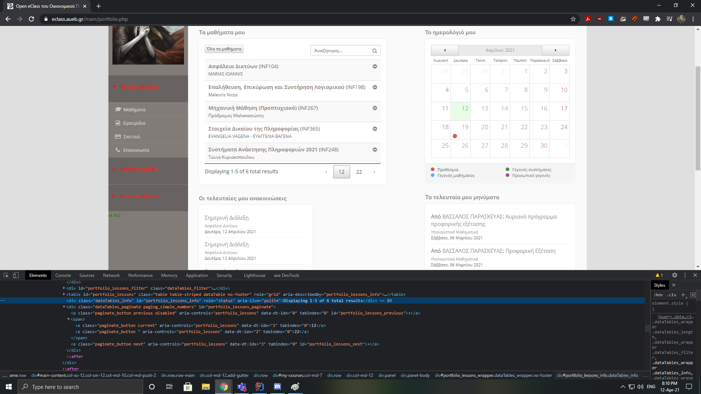
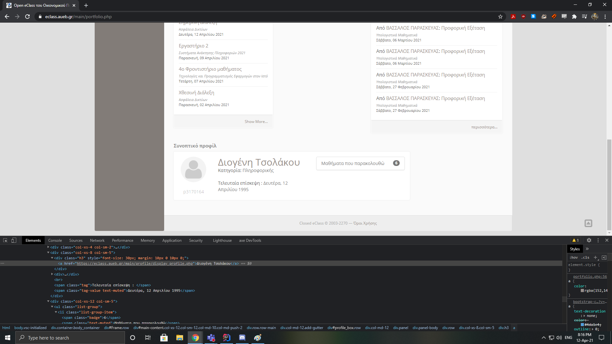
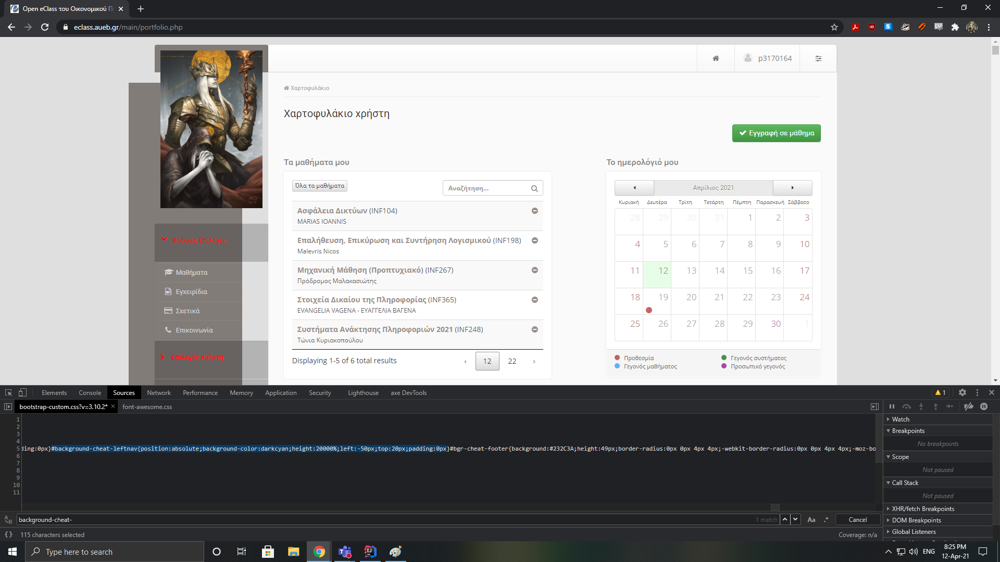
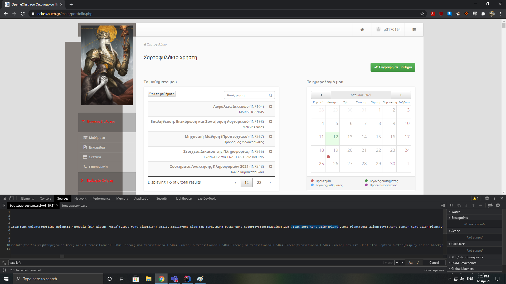
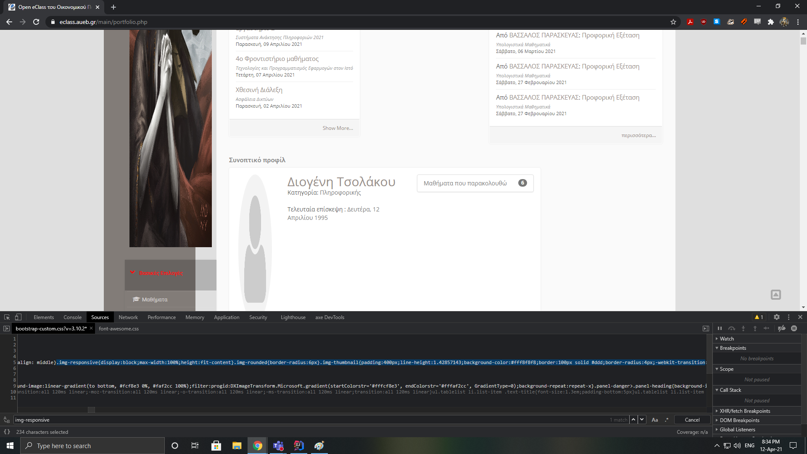

Changed the default AUEB icon to one from the web.

Changed left panel text color, font size and margins.

Changed courses table's numbering and language.

Increased name font size and capitalisation and some dates.

Changed left panel position and height. Notice the smaller scrollbar. Trying to change its color didn't work.

Changed text alignment of courses table's items to right.

Changed the height of the added image and increased the padding of the default profile icon.
The latter seems to only increase vertically instead of the actual padding around the image.
Changing the color doesn't work.